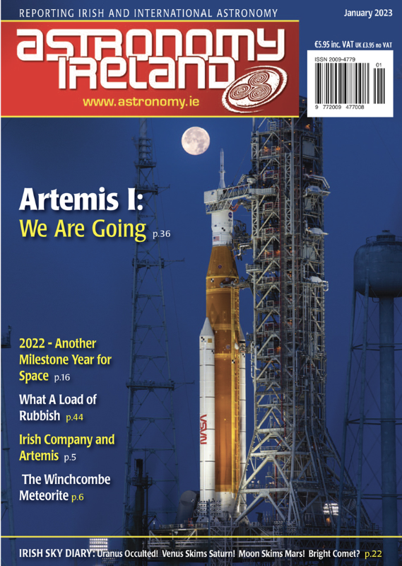

Be first to hear about exclusive releases
new products, expert tech tips, promotions and inspiration for your next adventure.
Receive free emails straight to your inbox each week.

Latest Events
Equipment Advice
Freebies
Subscribe at: admin@astronomy.ie
GALLERY
Beginners' books and guides can be a great introduction to astronomy, but nothing beats experience. The more you stargaze, the more you’ll learn. Here are some wonderful observations sent to us by fans of the site.
If you're new to astronomy, you might be wondering where to start. It can be daunting stepping out under the night sky for the first time with the intention of learning your way around the stars and constellations, looking out for planets and trying to get to know all about the phases of the Moon.Most beginners presume that the best time to observe the Moon is when it’s high in the night sky, but at that point it’s way too bright.
Instead, find out the exact time of moonrise on the night of the full Moon and watch our satellite appear on the horizon during dusk.